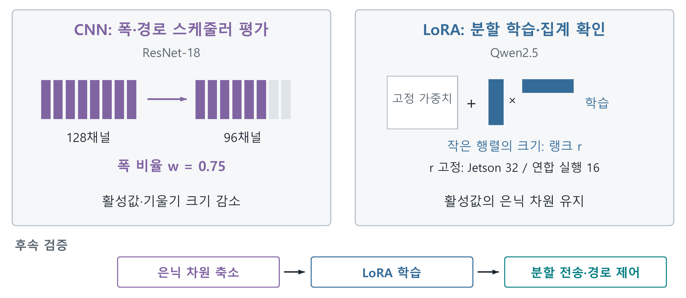

AwareNet 서술형 보고서
K-디지털 챌린지 넷 챌린지 캠프 시즌13
최종보고서
AwareNet
분할 연합학습의 모델 폭과 전송 경로를 조절하는 스케줄러
충남대학교 전파정보통신공학과
성시준 · 석태경
팀장 성시준 / 참가 분야: 향상된 Network
본 보고서는 모델 폭과 전송 경로를 연계하는 스케줄러의 설계, KOREN 연구망 실험, 시간·정확도 비교를 정리했다. 보존된 실험 기록을 바탕으로 2026년 9월 28일 용어와 설명을 개정했다.
한국지능정보사회진흥원장 귀하
본 연구보고서는 한국지능정보사회진흥원의 출연금으로 수행한 K-디지털 챌린지 넷 챌린지 캠프 시즌13 연구망 활용 과제의 결과이다.
요 약 문
1. 제 목
AwareNet: 분할 연합학습의 모델 폭과 전송 경로를 조절하는 스케줄러
2. 아이디어 개발의 목적 및 필요성
분할 연합학습(Split Federated Learning, SFL)은 모델의 앞부분을 클라이언트에, 뒷부분을 서버에 두고 함께 학습한다. 클라이언트의 계산 부담을 줄이는 대신 배치마다 활성값과 기울기를 주고받는다. 이때 계산이 느린 클라이언트나 혼잡한 전송 구간이 전체 학습을 지연시킬 수 있다.
AwareNet은 모델 폭과 전송 경로를 함께 조절한다. CNN에서는 채널 수가 모델 폭을 결정한다. 이 프로젝트는 채널 수를 조절하기 위해 CNN을 선택했고, 원래 채널 수 대비 사용하는 비율을 ‘폭 비율 w’로 정의했다. 폭 비율을 낮추면 계산량과 활성값 전송량을 함께 줄일 수 있지만 모델의 표현 능력도 달라진다. 따라서 먼저 경로 변경으로 줄일 수 있는 지연을 평가한다.
3. 아이디어 개발의 내용 및 범위
스케줄러는 클라이언트별 계산 시간, 전송량, 경로 용량으로 완료 시간을 예측한다. 현재 모델 폭을 유지한 경로 후보를 먼저 비교한 뒤, 남은 지연에 대해 폭 축소의 시간 이득과 페널티를 비교한다. 다음 라운드에 적용할 폭 비율, 중계 서버 배정, 연결별 전송 비율을 출력한다. ResNet-18의 클라이언트·서버 분할 지점은 고정했다.
CNN 실험에서는 폭·경로 제어의 시간과 정확도를 평가했다. 별도의 언어모델 실험에서는 LoRA로 학습 파라미터를 줄이고, 클라이언트·서버 분할 실행과 여러 클라이언트의 학습 결과 집계를 확인했다. LoRA는 원래 가중치를 고정한 채 추가한 저랭크 행렬을 학습하는 방법이다. 이 보조 실험은 고정 랭크를 사용하며, CNN의 채널 축소와는 별도로 설명한다.
4. 개 발 결 과
KOREN VM 두 대와 HPC를 연결한 32개 논리 클라이언트 실험에서, AwareNet은 전체 채널·단일 전송 연결 기준선보다 라운드 시간을 정상 24.6%, 트래픽 몰림 42.6%, 연산 지연 40.3%, 용량 변동 26.7% 줄였다. 24라운드 중 초기 4라운드를 제외한 3시드 평균이며, 실행 기록에서 혼잡에 따른 경로 이동과 지연 클라이언트 네 개의 폭 비율 0.75 선택을 확인했다.
학습 품질은 8프로세스·200라운드 기록으로 평가했다. 폭 축소 페널티 λ=280에서는 전체 채널을 유지하며 라운드 시간이 19.11초에서 15.15초로 줄었다. 마지막 50라운드 평균 정확도는 기준선 65.5%, AwareNet 65.2%였다. λ를 낮추면 시간과 정확도가 함께 낮아졌다.
표 1. 시간 단축과 학습 품질의 핵심 결과
| 비교 | 시간 단축 / 평균 w | 학습 품질 결과 |
|---|
| 32프로세스·4조건 | 24.6~42.6% 단축 | 최종 정확도: 표 4 |
| 8프로세스·λ=280 | 20.7% / 1.000 | 65.5% → 65.2% (-0.3%p) |
| 8프로세스·λ=70 | 32.5% / 0.977 | 65.5% → 63.2% (-2.3%p) |
| 8프로세스·λ=18 | 58.1% / 0.832 | 65.5% → 53.6% (-11.9%p) |
비교군은 전송 연결 하나의 기준선과 두 전송 연결의 AwareNet이다. 8프로세스 결과는 2시드이며, CIFAR-10 시험 데이터 앞 2,000개로 정확도를 평가했다. 세부 조건은 본문에 제시한다.
5. 기 대 효 과
병원 등 여러 기관이 데이터를 각자 보관하면서 전역 모델을 함께 학습하는 환경에 활용할 수 있다. 클라이언트의 계산·통신 상태에 맞춰 모델 폭과 경로를 조절하여 공동 학습의 대기를 줄이고, 다양한 기관의 데이터가 모델 개선에 반영될 기반을 마련하는 것이 기대 효과다.
목 차
Ⅰ. 서 론1
1. 개발 목적 및 필요성1
2. 특징(차별성·독창성·혁신성)2
Ⅱ. 아이디어 개발 추진 내용과 범위3
1. 개발 목표 및 추진 내용3
2. 단계별 세부 구현 계획6
Ⅲ. 아이디어 개발 진행 내용 및 결과8
1. 개발 수행 현황 및 중간 결과물8
2. KOREN 연동 및 활용 방안15
3. 멘토 의견에 따른 개선사항 및 향후 진행방향15
Ⅳ. 결 론16
1. 개발 중간 결과물16
2. 기술 구현에 따른 기대 효과17
Ⅴ. 참 고 문 헌18
부록. 원자료와 재현 안내20
그림 및 표 목차
표 1. 시간 단축과 학습 품질의 핵심 결과요약 2
표 2. 관련 연구와 AwareNet의 제어 대상2
그림 1. 클라이언트·중계 서버·학습 서버와 스케줄러의 연결3
그림 2. 계층 분할, 모델 폭 조절, 전송 조각의 차이4
그림 3. 경로 우선 평가와 폭 적응의 실행 절차6
그림 4. HPC와 KOREN VM을 이용한 실제 전송 배치8
표 3. 시간 평가와 정확도 평가의 조건9
그림 5. 네 병목 조건에서의 평균 라운드 시간10
표 4. 같은 실행에서 기록한 최종 정확도10
그림 6. 트래픽 몰림의 시간 응답과 연산 지연 클라이언트의 폭 선택11
표 5. 시간 단축과 응용 전송량의 변화11
그림 7. 폭 축소 페널티에 따른 시간과 정확도의 관계12
표 6. 200라운드 실험의 시간과 학습 품질12
그림 8. 기존 CNN·LoRA 실험과 은닉 차원 축소의 확장 방향13
그림 9. 병원 간 공동 학습과 전역 모델 개선을 지원하는 활용 예시17
Ⅰ. 서 론
1. 개발 목적 및 필요성
여러 현장에 쌓인 이미지로 하나의 분류 모델을 함께 개선하려면 각 현장의 클라이언트가 학습에 참여할 수 있어야 한다. 연합학습은 클라이언트에 데이터를 두고 학습 결과를 모으는 방법이다.[13] 전체 모델을 학습하기 어려운 클라이언트를 위해 분할 연합학습은 모델의 앞부분을 클라이언트에, 뒷부분을 서버에 배치한다. 대신 배치마다 활성값과 기울기를 교환하므로 네트워크 상태가 학습 속도에 직접 영향을 준다.
이 프로젝트는 모든 참여 클라이언트가 한 라운드를 마친 뒤 모델을 집계하는 동기식 구조를 사용한다. 따라서 가장 늦은 클라이언트가 전체 진행을 늦춘다. 계산이 오래 걸릴 때에는 계산 부담을 줄여야 하고, 전송이 밀릴 때에는 혼잡한 구간의 부하를 분산해야 한다.
AwareNet은 CNN의 채널 수를 바꾸어 모델 폭을 조절하고 전송 경로도 함께 선택한다. 채널 수를 줄이면 계산량과 전송량을 낮출 수 있지만 모델도 작아진다. 여유 있는 중계 서버를 이용하면 모델 폭을 유지하면서 통신 지연을 줄일 수 있다. 두 경로가 같은 포화 회선을 공유하면 경로 변경의 효과도 작아진다. 스케줄러는 이 차이를 반영해 두 조치의 시간 이득을 비교한다.
초기 설계에서는 대역폭을 재배분했다. 그러나 고정된 공유 회선의 용량을 나누는 것만으로는 전체 대기를 충분히 줄이지 못했다. 이에 클라이언트가 사용하는 채널 수를 조절 대상으로 추가하고, 경로 변경 이후에도 남는 지연에 모델 축소를 적용하도록 설계를 바꾸었다.[15]
이 프로젝트는 ‘어느 클라이언트의 모델 폭을 얼마나 줄이고, 어느 중계 서버를 이용해야 라운드를 빨리 마칠 수 있는가’를 검토한다. CNN 실험에서는 폭·경로 제어의 시간과 정확도를 평가한다. 이어 LoRA를 사용한 별도의 언어모델 실험으로 분할 학습과 연합 집계의 실행 가능성을 확인한다. CNN의 폭은 채널 수로 조절하고, LoRA는 원래 가중치를 고정한 채 추가한 작은 행렬을 학습한다.[7] 두 실험의 목적과 조절 변수를 구분해 결과를 제시한다.
2. 특징(차별성·독창성·혁신성)
FjORD와 FedRolex는 이질적인 클라이언트가 서로 다른 크기의 부분 모델을 학습하는 방법을 다룬다.[1,2] AdaptSFL은 분할 위치와 클라이언트 모델 집계 주기를, SuperSFL은 이질적인 분할 깊이와 기울기 결합을 다룬다.[3,4] 통신·연산 자원과 분할 위치의 공동 최적화 역시 연구되어 왔다.[5,6] 이 연구들은 클라이언트 자원과 학습 동작을 연결하는 토대를 제공한다.
AwareNet이 집중하는 것은 정해진 분할 위치에서 모델 폭과 중계 경로 배정을 함께 운용하는 문제다. 경로의 수보다 공유 자원 아래의 실제 처리 능력을 평가하고, 경로 재배정으로 줄일 수 있는 지연을 폭 선택에 먼저 반영한다. 표 2는 이러한 제어 대상의 차이를 정리한다.
표 2. 관련 연구와 AwareNet의 제어 대상
| 접근 | 주요 결정 변수 | 프로젝트와의 연결 |
|---|
| FjORD·FedRolex [1,2] | 부분 모델의 크기·추출 | 폭 선택의 학습 측 구성 요소 |
| AdaptSFL·SuperSFL [3,4] | 분할·집계·기울기 결합 | 자원 적응형 SFL의 설계 토대 |
| 자원 공동 최적화 [5,6] | 통신·연산 자원 배분 | 완료 시간 기반 판단의 관련 접근 |
| AwareNet | 폭 비율·중계 서버·전송 비율 | 중계 경로의 여유를 채널 수 선택에 반영 |
이 프로젝트의 기여는 세 가지다. 첫째, 경로 후보를 먼저 평가하고 시간 이득과 폭 축소 페널티를 비교하는 단계적 스케줄러를 구현했다. 둘째, KOREN의 실제 텐서 전송 환경에서 네 가지 교란 조건의 라운드 시간을 측정하고 배정·폭의 변화와 연결했다. 셋째, 폭 축소 페널티를 바꾼 200라운드 기록에서 시간 단축과 정확도 변화를 함께 제시했다.
이후 Ⅱ장은 입력 지표에서 경로·폭 결정과 전송 실행으로 이어지는 구조를 설명한다. Ⅲ장은 동일한 비교군 정의 아래 시간, 통신량, 학습 품질을 순서대로 제시하고 실제 장비 기록으로 적용 배경을 보완한다.
Ⅱ. 아이디어 개발 추진 내용과 범위
1. 개발 목표 및 추진 내용
개발 목표는 클라이언트의 계산·통신 병목에 맞춰 모델 폭과 중계 경로를 결정하고 실제 분할 학습 실행까지 연결하는 것이다. 이를 위해 학습, 중계, 스케줄러의 역할과 입력 지표를 다음과 같이 구성했다.
가. 클라이언트·중계 서버·학습 서버의 역할
클라이언트는 모델 앞부분의 순전파와 역전파를 수행한다. 학습 서버는 모델 뒷부분을 계산하고 라운드가 끝나면 여러 클라이언트의 갱신을 집계한다. 중계 서버는 두 학습 주체 사이에서 텐서 조각을 전달한다. 학습 서버와 중계 서버의 역할을 나누어, 경로를 바꾸어도 뒷부분 모델을 다른 서버로 옮길 필요가 없도록 구성했다.

그림 1. 클라이언트·중계 서버·학습 서버와 스케줄러의 연결
그림의 경로는 클라이언트에서 중계 서버를 거쳐 학습 서버로 가는 논리 연결이다. 하나의 텐서를 두 TCP 연결에 나누어 보내며, 각 연결이 이용할 중계 서버를 선택한다. 서로 다른 중계 서버를 이용해도 실제 회선 일부를 공유할 수 있으므로, 용량 계산에는 이 공유 관계를 반영한다.
스케줄러는 클라이언트별 계산 시간, 전체 채널을 사용할 때의 전송량, 연결별 속도 상한과 중계 용량을 입력받는다. 관측한 전송 시간으로 경로 용량과 예측 오차를 갱신한다. 출력은 다음 라운드의 폭 비율, 중계 서버 배정, 연결별 전송 비율이다. ‘모델 폭’은 CNN의 채널 수를 뜻하고, ‘폭 비율’은 원래 채널 수에 대한 비율이다. ‘경로’는 중계 서버를 거치는 전송 연결을 뜻한다.
나. 모델 폭과 채널 수의 관계
CNN은 여러 채널의 특징 맵을 계산한다. 합성곱 계층에서는 채널 수로 모델 폭을 표현한다.[1,14] 이 프로젝트는 채널 단위로 부분 모델을 만들 수 있다는 점 때문에 ResNet-18을 선택했다. 모델 폭 제어는 각 계층에서 사용할 채널 수를 바꾸는 동작이며, 폭 비율(width multiplier) w는 원래 채널 수 대비 사용하는 비율이다.

그림 2. 계층 분할, 모델 폭 조절, 전송 조각의 차이
실험에서는 두 번째 잔차 단계 뒤에서 클라이언트와 서버의 계산을 나누었다. 이 분할 지점의 원래 채널 수는 128개다. 폭 비율 w=0.75를 선택하면 96개, w=0.5를 선택하면 64개를 사용한다. 배치 크기 32, 특징 맵 16×16, FP32에서 활성값 크기는 각각 4, 3, 2MiB다. 같은 모양의 반환 기울기도 줄어든다. 이는 텐서 모양으로 계산한 크기이며 레이블과 통신 헤더는 제외했다.
실험은 FjORD의 Ordered Dropout처럼 앞쪽 채널부터 선택한다.[1] 클라이언트와 학습 서버가 같은 채널을 사용하고, 학습한 위치의 파라미터만 집계한다. 여기서 계층 분할은 계산 위치, 모델 폭 조절은 사용할 채널 수, 전송 조각 나누기는 텐서의 전달 방식을 결정한다. LoRA의 랭크는 별도의 변수이며 Ⅲ장 1절에서 설명한다.
다. 계산과 전송에 걸리는 시간의 예측
폭을 줄였을 때의 계산 절감과 경로를 바꿨을 때의 전송 절감을 비교하려면 같은 단위가 필요하다. 클라이언트 i의 폭 비율을 wi, 전체 경로 배정을 S라고 할 때 배치 완료 시간을 다음과 같이 예측한다.
ti(wi,S) ≈ ciwiγi + 8biwi/Ri(S) + εi (1)
ci는 전체 채널을 사용할 때의 계산 시간, γi는 폭 비율에 따른 계산 시간 변화를 나타내는 지수, bi는 폭 비율 1.0에서 한 배치의 왕복 전송량(byte)이다. Ri(S)는 해당 경로 배정에서 클라이언트가 실제로 사용할 수 있다고 추정한 전송 속도(bit/s)다. 같은 중계나 접속 회선을 지나는 흐름은 용량을 나누어 사용하도록 계산한다. CNN에서는 폭 비율에 따라 활성값 크기가 바뀌므로 전송량에 wi를 곱한다. εi는 관측과 기본 예측의 차이를 반영한다.
경로 단계에서는 현재 폭을 유지하고 최대 지연과 평균 지연의 합을 비교한다. 최대 지연은 라운드 완료를, 평균 지연은 나머지 클라이언트의 대기를 반영한다. 코드의 경로 점수는 아래 값의 N배로 같은 순위를 만든다.
JP(S | w) = maxi ti + (1/N)Σiti (2)
폭 단계에서는 경로 평가로 얻은 목표 배정 S*를 두고 다음 비용을 비교한다. B는 라운드당 배치 수, N은 클라이언트 수이며 λ는 모델을 줄이는 데 얼마만큼의 페널티를 줄지 정하는 값이다. 단위는 초이며, 값이 클수록 채널 수를 유지하는 선택을 선호한다.
JW(w | S*) = maxi Bti(wi,S*) + (λ/N)Σi(1-wi) (3)
이 페널티는 채널 감소를 억제하는 설정값이다. 정확도 손실을 직접 예측하는 값은 아니므로, 실제 정확도 변화는 Ⅲ장의 학습 결과로 확인한다. 이 두 점수를 경로 평가와 폭 선택에 각각 사용하여, 경로의 여유가 있을 때 폭을 보존하고 남은 부담에 대해 축소 여부를 판단한다.
2. 단계별 세부 구현 계획
구현은 상태 측정, 경로·폭 결정, 텐서 전송, 결과 평가의 네 단계로 추진했다. 앞 단계의 출력을 다음 단계의 입력으로 연결하고, 실행 기록으로 계획한 제어가 실제로 적용됐는지 확인한다.
가. 경로 평가 후 폭을 결정하는 절차
AwareNet은 완료된 라운드의 관측을 이용해 다음 라운드를 계획한다. 먼저 현재 폭으로 허용된 중계 서버 조합을 평가한다. 경로 조합이 많으면 한 클라이언트의 경로를 바꾸어 점수가 낮아지는 후보를 차례로 선택한다. 32프로세스 실험에서는 한 라운드에 최대 세 클라이언트의 배정을 변경했다.

그림 3. 경로 우선 평가와 폭 적응의 실행 절차
폭을 고를 때에는 예정된 경로 이동이 끝난 상태를 기준으로 계산한다. 이동을 기다리는 동안의 일시적 혼잡 때문에 모델을 줄이는 일을 피하기 위해서다. 가장 느린 클라이언트와 그에 가까운 클라이언트들의 폭 비율을 한 단계 낮추어 최대 완료 시간이 얼마나 줄어드는지 계산한다. 예상 이득의 90%가 λ×평균 폭 비율 감소량보다 크면 그 후보를 채택한다. 이번 라운드에 실행할 폭 변경은 한 단계로 제한하고, 폭 비율을 다시 늘릴 때에는 두 번 연속 복귀 조건을 확인한다.
망 용량의 관측 변화가 설정 용량의 5%를 넘는 라운드에는 폭을 유지하면서 경로를 먼저 조정한다. 또한 경로 점수의 감소가 이동 대상 클라이언트 시간의 10%와 전환 비용을 합한 문턱을 넘어야 이동한다. 이 규칙들은 단기 측정 변동에 대한 불필요한 폭 축소와 반복적인 경로 변경을 줄이기 위한 완충 규칙이다.
나. 결정 예시와 텐서 전송
혼잡한 중계를 사용하는 클라이언트가 대체 중계로 이동했을 때 예상 완료 시간이 줄어든다면, 스케줄러는 현재 폭을 유지한 채 경로를 바꾼다. 대체 경로까지 같은 접속 회선을 공유해 더 빨라지지 않거나 클라이언트 계산이 여전히 가장 오래 걸리면 폭 축소의 시간 이득을 평가한다. 네트워크 조정과 모델 축소가 같은 문제에 중복 대응하지 않도록 순서를 정한 것이다.
폭 결정의 수치 예로, 클라이언트 8개에서 한 클라이언트의 폭 비율을 1.0에서 0.75로 줄이면 평균 폭 비율 감소량은 0.25/8이다. λ=70일 때 비용은 약 2.19초다. 최대 라운드 시간이 3초 줄 것으로 예측하면 여유를 적용한 이득 2.7초가 비용을 넘어 후보를 채택한다. 예측 이득이 2초이면 1.8초가 비용보다 작아 폭을 유지한다. 이 예는 구현된 판단식의 계산을 보여준다.
결정된 경로에서는 연결별 예상 전송률에 비례해 조각을 배분한다. 예를 들어 두 전송 연결의 예상 속도가 6과 2이면 약 3:1로 나누어 완료 시각을 맞춘다. 현재 구현은 설정 용량과 공유 배정으로 조각 비율을 계산하고, 관측 용량은 경로 이동 판단에 사용한다. 이 구분은 배분 비율의 변화 자체를 중계 용량 변화로 오인하는 것을 줄이기 위한 선택이다.
전송 계층은 활성값과 기울기를 조각으로 나누어 지속 TCP 연결에 보낸다. 수신 측은 배치와 텐서 식별자를 이용해 조각을 모으고, 전체 텐서가 완성되면 학습 계산에 전달한다. 빠른 조각의 도착이 곧 다음 학습 단계의 시작을 뜻하지 않으므로 스케줄러는 전체 텐서의 완료 지연을 기준으로 판단한다.
실험에서는 Linux 트래픽 제어 기능으로 중계 용량과 지연 조건을 설정했다. 세부 명령과 계측 도구는 재현 자료에 수록했다. 주기적인 경로·폭 계획은 비용 계산과 규칙으로 수행하며, 전송 계층은 결정된 계획을 라운드 동안 유지한다.
Ⅲ. 아이디어 개발 진행 내용 및 결과
1. 개발 수행 현황 및 중간 결과물
가. 실험 구성과 비교 방법
실험은 세 질문에 답하도록 구성했다. 첫째, 서로 다른 병목 조건에서 라운드 시간이 얼마나 줄어드는가. 둘째, 폭·경로의 실제 선택이 병목의 변화와 어떻게 연결되는가. 셋째, 더 짧은 시간을 선택할 때 정확도는 어떻게 달라지는가. 앞의 두 질문은 32프로세스 시나리오로, 세 번째는 8프로세스의 200라운드 기록으로 평가한다.

그림 4. HPC와 KOREN VM을 이용한 실제 전송 배치
HPC에는 CPU 클라이언트 프로세스와 V100 학습 서버를, KOREN VM 두 대에는 총 네 개의 논리 중계 서버를 배치했다. 프로세스들이 실제 원격 TCP 연결로 데이터를 교환하며, 교란은 실행 중인 회선 설정과 클라이언트 연산 지연에 적용했다. 클라이언트 수 32는 이 배치에서 실행한 논리 참여자 수다.
두 계열 모두 기준선은 전체 채널·단일 전송 연결·고정 배정이며, AwareNet은 두 전송 연결과 폭·경로 제어를 사용한다. 따라서 비교의 대상은 두 시스템 구성이다. CIFAR-10 ResNet-18, 분할 위치 2, 배치 크기 32, 라운드당 4배치, SGD 학습률 0.05를 공통으로 사용했다. 다음 표에 규모별로 달라지는 자원 조건을 정리한다.
실험 조건과 지표 정의
표 3. 시간 평가와 정확도 평가의 조건
| 구분 | 32프로세스 시간 평가 | 8프로세스 정확도 평가 |
|---|
| 클라이언트 실행 | CPU 프로세스 32개·각 1스레드 | CPU 프로세스 8개·각 2스레드 |
| 반복 | 24라운드·3시드 | 200라운드·2시드 |
| 중계 용량 | 56Mbps × 4 | 125Mbps × 4 |
| 전송 연결 A/B | 클라이언트마다 5/2Mbps | 6개 50/20, 2개 20/20Mbps |
| 폭 비율·페널티 | 0.5/0.75/1.0, λ=70 | 같은 폭 비율 후보, λ=18/70/280 |
| 이동 상한 | 라운드당 3클라이언트 | 라운드당 1클라이언트 |
| 시간 지표 | 초기 4R 제외 평균 | 초기 4R 제외 평균 |
| 정확도 지표 | 최종 round 23 | round 150-199 평균 |
32프로세스의 정상 조건은 교란 없이 실행한다. 트래픽 몰림에서는 완료 라운드 수를 기준으로 8부터 중계 1의 용량을 56에서 14Mbps로 낮추고 20에 복구한다. 연산 지연에서는 c0·c8·c16·c24의 속도 계수를 0.15로 둔다. 용량 변동에서는 중계 1의 용량을 7Mbps 단위로 감소·복구한다. 원시 로그의 round 번호는 0부터 시작한다.
8프로세스의 연산 속도 계수는 c0=0.15, c1=0.25, 나머지=1.0이다. c2·c3의 전송 연결은 20/20Mbps, 나머지는 50/20Mbps로 설정했다. 학습 정확도는 실행 중 학습한 최대 폭 비율의 모델을 시험 데이터 앞 2,000개로 평가했다. 데이터 분할의 Dirichlet 계수는 0.5, 서버 인자의 alpha=1.2는 지연 기준선 배율이다. 각 지표는 실행별 값을 구한 뒤 시드 간 평균했다.
8프로세스 계열은 CPU·메모리 제약을 고려해 구성한 축소 실험으로 SHRiNK의 관점을 참고했다.[9] 규모와 자원 조건을 함께 바꾸었으므로 두 계열은 각각의 질문에 대한 결과로 제시한다. 응용 전송량은 서버가 기록한 활성값·레이블·기울기 바이트의 합이며, TCP/IP 헤더·재전송·모델 집계까지 포함한 회선 사용량과 구별한다.
나. 라운드 시간과 병목별 동작
그림 5는 기준선과 AwareNet의 평균 라운드 시간이다. 정상 조건에서는 63.19초에서 47.64초, 트래픽 몰림에서는 109.51초에서 62.87초로 줄었다. 연산 지연과 용량 변동에서도 각각 40.3%, 26.7%의 단축을 확인했다. 중계 구간에 교란을 준 트래픽 몰림 조건에서 가장 큰 차이를 확인했다.

그림 5. 네 병목 조건에서의 평균 라운드 시간
표 4. 같은 실행에서 기록한 최종 정확도
| 조건 | 기준선 | AwareNet | 차이 |
|---|
| 정상 | 43.48% | 48.12% | +4.63%p |
| 트래픽 몰림 | 44.82% | 44.32% | -0.50%p |
| 연산 지연 | 45.72% | 44.52% | -1.20%p |
| 용량 변동 | 45.98% | 43.13% | -2.85%p |
표 4는 24라운드 시점의 학습 진행을 보여준다. 짧은 실행에서 시드에 따른 변동이 커, 이 차이만으로 정확도 개선을 판단하기는 어렵다. 장기 학습에서 폭 축소 페널티에 따라 달라지는 시간·정확도 관계는 뒤의 200라운드 결과로 확인한다.
다. 시간 변화와 실제 제어의 연결
트래픽 몰림에서는 중계 용량이 낮아진 뒤 스케줄러가 경로를 재배정했다. 시드 1의 로그 round 9에서 세 클라이언트가 중계 서버를 바꾸었고, 분석 구간의 전체 평균 폭 비율은 0.998이었다. 연산 지연에서는 세 시드 모두 c0·c8·c16·c24의 폭 비율을 0.75로, 나머지 28개를 1.0으로 유지했다. 그림 6은 이 두 동작을 실행 기록에서 보여준다.

그림 6. 트래픽 몰림의 시간 응답과 연산 지연 클라이언트의 폭 선택
표 5. 시간 단축과 응용 전송량의 변화
| 조건 | 시간 단축 | 평균 폭 비율 | 전송량 감소 |
|---|
| 정상 | 24.6% | 1.000 | 약 0.0% |
| 트래픽 몰림 | 42.6% | 0.998 | 0.25% |
| 연산 지연 | 40.3% | 0.969 | 3.12% |
| 용량 변동 | 26.7% | 0.975 | 2.50% |
시간 단축률과 바이트 감소율은 서로 다른 결과다. 정상 조건은 폭과 데이터량을 유지하면서 두 전송 연결를 활용했고, 연산 지연은 일부 클라이언트의 폭을 줄였다. 트래픽 몰림의 큰 시간 차이와 작은 바이트 차이는 전송량뿐 아니라 경합과 완료 지연을 관찰해야 하는 이유를 보여준다.
라. 모델 성능과 폭 보존의 선택
그림 7은 8프로세스·200라운드 실험에서 가중치 λ에 따라 달라지는 시간과 정확도를 나타낸다. 채운 점은 두 시드 평균이며 빈 점은 개별 시드다. 정확도는 마지막 50라운드의 평균을 사용했다.

그림 7. 폭 축소 페널티에 따른 시간과 정확도의 관계
표 6. 200라운드 실험의 시간과 학습 품질
| 설정 | 라운드 시간 | 평균 폭 비율 | 정확도 |
|---|
| 기준선 | 19.11초 | 1.000 | 65.52% |
| AwareNet λ=280 | 15.15초 | 1.000 | 65.22% |
| AwareNet λ=70 | 12.90초 | 0.977 | 63.17% |
| AwareNet λ=18 | 8.01초 | 0.832 | 53.59% |
λ=280은 분석 구간에서 폭을 유지하면서 시간을 20.7% 줄였고 평균 정확도 차이는 -0.29%p였다. λ=70은 32.5% 단축과 -2.35%p, λ=18은 58.1% 단축과 -11.93%p를 보였다. 이 기록에서는 큰 가중치가 기준선에 가까운 정확도를, 작은 가중치가 더 빠른 실행을 제공했다. 두 시드의 관측값은 시간과 정확도를 함께 살펴보는 탐색 결과다. 같은 느린 클라이언트가 반복해서 작은 모델을 사용하면 일부 채널에 그 클라이언트의 데이터가 덜 반영될 수 있다. 적용 시에는 목표 정확도에 도달하는 시간과 클라이언트별 채널 학습 기회를 함께 확인해야 한다.
마. LoRA를 사용한 이유와 CNN 실험과의 관계
CNN 실험은 모델 폭과 경로를 조절했을 때의 시간·정확도를 평가한다. 이어 별도의 언어모델 실험으로 자원이 제한된 클라이언트에서도 분할 학습과 연합 집계를 실행할 수 있는지 확인했다. 이때 학습 파라미터를 줄이는 방법으로 LoRA를 사용했다.[7,8]
LoRA(Low-Rank Adaptation)는 사전학습 모델의 가중치를 고정하고 추가한 저랭크 행렬을 학습한다. 랭크 r은 이 행렬의 크기를 정한다. CNN의 채널 수와 LoRA 랭크는 서로 다른 변수다. CNN에서 채널 수를 줄이면 분할 지점의 활성값도 작아진다. 일반적인 LoRA는 모델의 은닉 차원을 유지하므로, 랭크만 바꾸어도 배치마다 보내는 활성값 크기는 그대로다. 랭크는 학습 파라미터 수와 라운드별 어댑터 집계량에 영향을 준다.

그림 8. 기존 CNN·LoRA 실험과 은닉 차원 축소의 확장 방향
기존 Jetson 측정은 r=32, KOREN 연합 실행은 r=16을 고정했다. LoRA 결과는 언어모델의 분할 실행·메모리·집계를 확인하는 자료다. Ⅱ장의 전송량 biwi 식은 CNN 채널 조절에 사용한다.
모델 폭 축소와 LoRA를 함께 쓰는 확장도 가능하다. SliceGPT는 언어모델의 은닉 차원을 줄인 뒤 LoRA로 추가 학습했다.[16] 이를 적용하면 축소한 은닉 차원이 배치별 전송량을, 랭크 r이 학습 행렬의 크기를 정한다. 이 프로젝트는 고정 축소 모델의 품질과 분할 전송부터 검증하고, 이후 폭 전환과 경로 선택을 연결하는 후속 설계로 정리했다.
바. 실제 하드웨어에서 측정한 연산·메모리 비용
Jetson Orin Nano Super 8GB 한 대에서 Qwen2.5-0.5B의 LoRA 학습을 FP32, 랭크 32, 배치 1, 길이 256으로 실행했다. 초기 3스텝을 제외하고 전력 모드별 30스텝을 측정했다. 전체 스텝 시간의 중앙값은 MAXN_SUPER 554.1ms, 25W 608.9ms, 15W 903.7ms였다. 같은 모델과 배치를 사용해도 전력 모드에 따라 약 1.63배의 시간 차이를 확인했다.
KOREN VM에서는 Qwen2.5-7B를 한곳에 두고 LoRA로 학습하려 했으나 메모리가 부족했다. 모델을 클라이언트와 서버로 나눈 실행에서는 활성값과 기울기를 교환하며 10스텝을 진행했다. 클라이언트 앞부분 단독 프로파일의 최대 메모리는 6.44GB, 실제 분할 실행의 클라이언트 최대 기록은 7.94GB였다. 이 측정으로 큰 모델을 나누어 실행할 필요성과 분산 실행의 추가 메모리 비용을 확인했다.
사. KOREN에서 실행한 분할 학습과 연합 집계
KOREN VM 두 대에 논리 클라이언트 세 개를 배치하고 HPC 서버와 함께 LoRA 학습을 실행했다. Qwen2.5-0.5B를 두 번째 디코더 계층 뒤에서 나누고 랭크 16, 학습률 3×10-4로 16라운드×30스텝을 진행했다. 클라이언트와 서버는 배치마다 활성값·기울기를 교환하고 라운드 끝에 LoRA 어댑터를 집계했다.
학습 사실의 질문 표현을 바꾼 자체 18문항에서 미학습 모델은 0개, 단독 학습은 6개, 연합 두 방식은 각각 12개를 맞혔다. 이 결과로 소규모 문답 과제에서 분할 실행과 여러 클라이언트의 학습 내용 반영을 확인했다. Jetson의 스텝·전력·환경 기록과 LoRA의 학습·평가·메모리 로그는 공개 색인 E2·E4에, CNN과 LoRA의 변수 구분은 E9에 연결했다.
2. KOREN 연동 및 활용 방안
KOREN을 HPC와 원격 VM 사이의 중계 배정과 텐서 전송을 시험하는 연구망으로 활용했다.[11] 네 조건의 교란을 같은 배치에 적용하고, 실제 전송 완료 시간과 클라이언트별 폭·경로를 함께 기록했다. 라운드 시간의 변화와 스케줄러의 선택을 함께 분석했다. 8프로세스의 장기 실행은 장비 자원의 범위 안에서 시간·정확도 선택을 관찰하는 데 사용했다.
제어 대상은 클라이언트 프로그램과 운영자가 사용할 수 있는 중계 서버다. 기관 간 배치에서는 중계 사용 권한과 전송 인증을 갖추고, KOREN을 이용해 공유 병목과 원격 경로 조건을 달리하며 동작을 확인한다. OS-Ken 기반 스위치 연동은 권한을 위임받은 구간의 후속 통합 대상으로 정리했다.[10]
3. 멘토 의견에 따른 개선사항 및 향후 진행방향
설계 전환 회의록에 기록한 멘토 의견은 혼잡제어와의 구분, 시뮬레이션을 넘어선 실증, LoRA 설명의 초점에 관한 것이다.[15] 현재 보고서는 제어 대상을 모델 폭과 허용 중계 배정으로 구체화하고, KOREN의 실제 텐서 전송 결과를 중심에 두었다. CNN의 스케줄러 평가와 LoRA의 분할·집계 실행도 목적에 따라 설명했다.
이번 원고 검토 의견을 반영해 참여 주체를 클라이언트로 통일하고, 모델 폭·채널 수·폭 비율·LoRA 랭크를 구분했다. 구현 도구 설명은 줄이고 병목, 제어 판단, 시간·정확도 결과를 이어서 제시했다. 병원 등 여러 기관의 공동 학습은 기대 효과의 적용 환경으로 정리했다.
후속 평가는 전송 연결 수를 맞춘 정책 비교와 목표 정확도 도달 시간에 집중한다. 현재 주 비교는 단일 연결 기준선과 두 연결 AwareNet이며, 200라운드 정확도는 두 시드·시험 데이터 2,000개에서 평가했다. 반복 수와 평가 범위를 늘리고, 은닉 차원을 줄인 언어모델의 LoRA 학습·분할 전송을 확인한 뒤 동적 폭 전환을 검토한다.
Ⅳ. 결 론
1. 개발 중간 결과물
AwareNet은 분할 연합학습에서 모델 폭과 중계 경로를 순서대로 결정하는 적응형 스케줄러다. 클라이언트 계산 시간과 텐서 전송량, 공유 경로의 용량을 이용해 완료 시간을 예측한다. 현재 폭을 유지한 경로 후보를 먼저 비교하고, 경로 조정 이후의 시간 이득이 폭 축소 페널티보다 클 때 모델 폭을 낮춘다. 라운드별 변경 제한과 복귀 확인은 관측 변동에 대한 과도한 반응을 줄인다.
KOREN의 32개 논리 클라이언트 실행에서는 네 조건의 평균 라운드 시간이 기준선보다 24.6~42.6% 짧았다. 실행 기록은 트래픽 몰림에 따른 중계 서버 재배정과 연산 지연 클라이언트 네 개의 폭 축소를 보여주었다. 전송량 감소는 최대 약 3.12%로 시간 단축률보다 작았으며, 네트워크 경합과 완료 지연을 데이터량과 별도로 평가할 필요를 확인했다.
8프로세스의 200라운드 기록에서는 λ=280이 평균 폭 비율 1.0을 유지하면서 시간을 20.7% 줄였고 정확도는 기준선 65.52%와 AwareNet 65.22%였다. λ를 낮추면 더 짧은 라운드와 더 큰 정확도 차이를 함께 관측했다. 이 결과는 폭과 경로를 결합하는 이유를 시간·학습 품질의 선택 관계로 보여준다.
2. 기술 구현에 따른 기대 효과
병원처럼 데이터를 한곳에 모으기 어려운 기관들이 영상 분류 모델을 함께 학습하는 환경을 주요 활용 대상으로 본다. 의료 분야에서는 여러 기관의 데이터를 각 기관에 두고 공동 모델을 학습한 사례가 있다.[17] AwareNet은 이러한 환경에서 클라이언트의 계산 능력과 통신 상태가 달라 생기는 대기를 줄이는 학습·네트워크 스케줄러로 활용할 수 있다.

그림 9. 병원 간 공동 학습과 전역 모델 개선을 지원하는 활용 예시
중계 구간이 혼잡하면 여유 경로를 먼저 활용하고, 계산이 오래 걸리는 클라이언트에는 모델 폭 축소를 검토한다. 공유 회선의 용량과 모델 품질을 함께 고려하면 불필요한 축소를 줄이면서 공동 학습을 이어갈 수 있다. 이를 통해 제한된 시간 안에 학습을 진행하고, 여러 기관의 데이터가 함께 반영된 전역 모델(global model)을 지속적으로 개선할 기반을 마련하는 것이 기대 효과다.
그림은 향후 적용 시나리오다. 의료 환경에 적용할 때에는 기관별 접근 권한과 활성값·기울기의 정보 노출 위험을 별도로 검토해야 한다. 모델 개선 효과는 기관별 평가 데이터에서 확인하고, 네트워크 최적화 효과는 목표 성능에 도달하는 시간으로 평가한다. 이 프로젝트의 현재 실측은 KOREN·CIFAR-10과 Jetson·LoRA 실행을 대상으로 한다.
Ⅴ. 참 고 문 헌
[1] S. Horvath 외. “FjORD: Fair and Accurate Federated Learning under heterogeneous targets with Ordered Dropout.” arXiv:2102.13451, v5, 2022. https://arxiv.org/abs/2102.13451v5
[2] S. Alam 외. “FedRolex: Model-Heterogeneous Federated Learning with Rolling Sub-Model Extraction.” NeurIPS 2022; arXiv:2212.01548v2, 2023. https://arxiv.org/abs/2212.01548v2
[3] Z. Lin 외. “AdaptSFL: Adaptive Split Federated Learning in Resource-constrained Edge Networks.” arXiv:2403.13101v4, 2025. https://arxiv.org/abs/2403.13101v4
[4] A. Al Asif 외. “SuperSFL: Resource-Heterogeneous Federated Split Learning with Weight-Sharing Super-Networks.” arXiv:2601.02092v2, 2026. https://arxiv.org/abs/2601.02092v2
[5] Y. Liang 외. “Communication-and-Computation Efficient Split Federated Learning: Gradient Aggregation and Resource Management.” arXiv:2501.01078v1, 2025. 비교 범위는 §IV Joint CCC Strategy. https://arxiv.org/html/2501.01078v1
[6] W. Shi 외. “Joint Device Scheduling and Resource Allocation for Latency Constrained Wireless Federated Learning.” arXiv:2007.07174, 2020. https://arxiv.org/abs/2007.07174
[7] E. J. Hu 외. “LoRA: Low-Rank Adaptation of Large Language Models.” arXiv:2106.09685, 2021. https://arxiv.org/abs/2106.09685
[8] Z. Lin 외. “SplitLoRA: A Split Parameter-Efficient Fine-Tuning Framework for Large Language Models.” arXiv:2407.00952, 2024. https://arxiv.org/abs/2407.00952
[9] R. Pan 외. “SHRiNK: A method for scaleable performance prediction and efficient network simulation.” IEEE INFOCOM, 2003. https://web.stanford.edu/~balaji/papers/03shrinkaCONF.pdf
참고문헌 계속
[10] OpenStack. “Writing Your OS-Ken Application.” OS-Ken 공식 문서. https://docs.openstack.org/os-ken/latest/writing_os_ken_app.html
[11] 한국지능정보사회진흥원. “AI·네트워크 혁신 아이디어, KOREN을 통해 현실이 되다.” 2026-07-24. https://www.nia.or.kr/site/nia_kor/ex/bbs/View.do?bcIdx=29740&cbIdx=90549
[12] AwareNet. 실험 원자료 및 보고서 재집계. KOREN의 scen32 로그, 8프로세스의 r8mix_acc 로그, Jetson 연산 기록 및 LoRA 실행 기록. 지표 정의·시드별 값·SHA-256은 configs/measurements/report_metrics_revised.json에 수록했다. 공개 원자료는 다음 색인에서 제공한다.
https://sijoon-sung.github.io/AwareNet/site/evidence.html
[13] 한국정보통신기술협회. 정보통신용어사전, “연합 학습, federated learning.” https://terms.tta.or.kr/dictionary/dictionaryView.do?subject=federated+learning
[14] PyTorch. “Conv2d.” 공식 문서, 입력·출력 채널과 텐서 모양. https://docs.pytorch.org/docs/stable/generated/torch.nn.Conv2d.html
[15] AwareNet. 「설계전환_회의록」, 「방향검토보고서」, 「설계_멀티패스_분할전송」, 「설계기록_컨트롤러」. 당시 문제·수정안과 현재 설명의 연결은 공개 색인 E9에 수록했다.
[16] S. Ashkboos 외. “SliceGPT: Compress Large Language Models by Deleting Rows and Columns.” ICLR 2024. 은닉 차원 축소와 LoRA 추가 학습은 §3·§4.1 참조. https://arxiv.org/abs/2401.15024
[17] I. Dayan 외. “Federated learning for predicting clinical outcomes in patients with COVID-19.” Nature Medicine 27, 1735–1743, 2021. https://doi.org/10.1038/s41591-021-01506-3
기존 실험 파일을 재집계하여 원고를 개정했다. 원파일과 실행 당시의 args·profile을 함께 보존하고, 새로 계산한 통계는 별도 원장에 기록했다. 제출 형식은 보존된 중간보고서의 요약문 및 Ⅰ~Ⅴ장 구성을 따른다.
부록. 원자료와 재현 안내
보고서의 수치와 그림은 보존된 실험 파일에서 재집계했다. 공개 색인은 주장별 조건, 원경로, 파일 해시와 내려받기 묶음을 제공한다.
https://sijoon-sung.github.io/AwareNet/site/evidence.html
E1은 KOREN 32프로세스의 24개 시나리오 로그와 args·profile·교란 조건이다. E7은 8프로세스 축소 실행과 주입 재현 기록이다. 본문 정확도 비교에는 r8mix_acc의 200라운드 로그 8개를 사용했다. E8에는 이번 보고서의 집계 코드, 지표 정의, 시드별 값과 그림 생성 코드를 연결했다.
E2는 Jetson의 세 전력 모드별 원시 스텝·환경·전력 로그와 측정 코드다. 복구 커밋은 582b1d4e249918b2e1075d2a014acd00393ce1cb이다. E4는 LoRA 실행·평가 및 모델 규모별 메모리 로그다. E3에는 실측값 주입 재현에 사용한 KOREN 전송 기록을 보존했다.
보조 가상망 실험의 패킷·대시보드·환경 기록은 E5, 네트워크 설정 및 구현 감사는 E6에서 제공한다. 본문에서는 이를 실험 재현의 기반 자료로 사용하며, 도구별 설정과 디버깅 이력은 해당 자료에 수록했다.
재집계는 scripts/analysis/build_revised_report_metrics.py로 수행한다. 산출물 configs/measurements/report_metrics_revised.json은 사용한 파일 70개의 SHA-256과 지표 정의를 포함한다. 시나리오 시간은 각 실행의 초기 4라운드를 제외한 평균, 200라운드 정확도는 마지막 50라운드 평균을 구한 뒤 시드 간 평균을 계산한다.
비교 예제의 3:1 전송 비율, 폭 축소 페널티 2.19초, 활성값 4·3·2MiB는 Ⅱ장의 판단식을 설명하는 계산 예시다. KOREN·Jetson의 측정값, 과거 값의 주입 재현, 설명용 계산은 각각의 출처와 조건을 따른다. 설계 선택의 변천과 용어 출처는 E9에서 함께 제공한다. 클라이언트·폭 비율·LoRA 랭크의 용어는 9월 28일 개정 기준을 따른다. 등록 과제명은 “KOREN SDN 기반 AI 인지형 동적 네트워크 플랫폼”이며, 본 보고서의 기술 제목은 실제 구현인 폭·경로 적응형 스케줄러를 중심으로 정리했다.